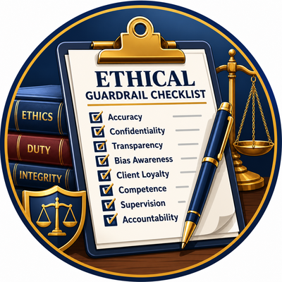

Last stretch. We have covered the duties and we have practiced the techniques. Now we make it portable, so it survives the drive home and shows up in your actual work.
Three things in fifteen minutes. A short checklist you run before AI-assisted work leaves your desk. A clear set of do-and-don't rules. And a simple record that protects you if anyone ever asks how the work was done.
None of this is heavy. It is meant to fit on one page and to become automatic.
The ultimate decisions — what argument to raise, what strategic path to pursue, what risks to take — belong solely to us.
To close the session, one line to carry with you. It comes from Andrew Birrell, the president of the National Association of Criminal Defense Lawyers.
The ultimate decisions, what argument to raise, what strategic path to pursue, what risks to take, belong solely to us. That is what this whole segment protects.
The checklist, the do-and-do-not rules, and the record all exist so the tool can draft and suggest while the choices that decide a case stay yours. Hold onto that, and let us finish.

One page, every time. If any box is unchecked, the work is not ready to leave your desk.
This is the checklist, and it is the single most useful thing you can take from today. Eight questions, and you can run them in under a minute.
Did I keep client-identifying facts out of the tool. Do I understand this tool's limits for the task. Did the model work from sources I trust. Did I open and confirm every citation myself. Did I make the strategic calls. Is everything I will file true. Did I review this like a new associate's draft. And can I explain later how the work was produced.
The rule is simple. If any box is unchecked, the work is not ready to leave your desk. It is printed on the resources page, so take it and tape it up.
If the checklist is the process, these are the bright lines. On the do side, use AI for what it is good at. Drafting, summarizing, outlining, and surfacing angles you can then evaluate. Ground it in real authority. Verify every citation. Use fictional facts in consumer tools. And keep the judgment and the signature yours.
On the do-not side, the rules that keep people out of trouble. Never file a citation you have not read. Never paste privileged facts into a consumer tool. Never treat confidence as verification. Never let the model make the call for a client. And never assume that grounding or a tidy format lets you skip the check.
Read these two lists back to yourself once a week for a month and they become instinct.
Which tool, for which task, on what facts. A one-line note in the file is enough for most work.
Read the full output as the responsible attorney. Edit for accuracy, tone, and fit to this client.
Confirm every legal authority and factual claim against a real source before it goes anywhere.
A short record turns a hard question into an easy answer. You used a tool, you supervised it, and you verified the result.
Now the part that quietly protects you. Three verbs. Document, review, verify.
Document is lighter than it sounds. A single line in the file noting which tool you used, for which task, on what facts. Review means you read the whole output as the responsible attorney and edit it for accuracy and fit. Verify means you confirm every authority and factual claim against a real source.
Here is why it is worth the small effort. If a court or a client or a bar committee ever asks how the work was done, a short record turns a hard question into an easy answer. You used a tool, you supervised it, and you verified the result. That sentence is a good place to stand.
The test. If you can supervise it and verify it, it may be a fit. If you cannot, it is not.
People often ask where the line is. Here is a test you can apply in seconds. AI is a good fit for first drafts you will edit hard, for summaries you can check, for brainstorming defenses, for reworking tone and clarity, and for organizing facts you provide.
It is a poor fit for final legal authority without verification, for anything that would require privileged facts in a consumer tool, for the strategic calls that belong to you and your client, for tasks you cannot evaluate for correctness, and for client-facing output sent without review.
Boil it down to one question. Can I supervise this and verify it. If yes, it may belong. If no, it does not. That single question resolves most of the hard cases.
Practice-area tooling that treats every output as a draft for attorney review, flags unverified citations, and gates irreversible steps. A model for how legal AI should behave.
A ready-made defense-focused bot that carries the TCDLAi framework and the guardrails by default. Build your own from the resources page, or open the one already published.
Whether the tool is general or built for law, the standard does not move. It drafts, you verify, you decide, you sign.
Two quick pointers for after today. First, purpose-built tooling. Claude for Legal is an example worth knowing, because of how it behaves. It treats every output as a draft for your review, it flags citations it cannot verify, and it stops before anything irreversible. That is the posture we want from legal AI.
Second, you can build your own. On the resources page I have put a set of knowledge files and custom instructions for a BoodleBox bot I am calling LegalAI. Upload those and the bot carries the TCDLAi framework and today's guardrails by default, so the good habits are baked in.
Either way, the through-line holds. General tool or legal tool, it drafts, you verify, you decide, and you sign.
The six-move framework, with example defense prompts for each letter.
Every major point as three moves: articulate it, connect it, extend it.
The eight-point, one-page check you run before relying on any output.
Prompts sorted by type and task, each written to push toward verification.
A searchable, evidence-weighted directory of current legal AI tools.
Open it in BoodleBox or as a ChatGPT GPT, or build your own from the files.
One address holds it all. go.mgpd.org/tcdla26. Bookmark it before you leave.
Here is everything you are taking home, and it is all in one place. The TCDLAi Prompt Design Guide with example prompts for every letter, and the ACE Framework Companion that turns each point into something you restate, connect, and use. The eight-point ethical checklist on a single page, and the legal prompt library sorted by type and task. A market atlas of current legal AI tools you can search by phase and price. And a ready-to-use LegalAI assistant you can open in BoodleBox or as a ChatGPT GPT, or build your own from the files.
You do not need to copy any of this down. It lives at go.mgpd.org/tcdla26. Bookmark that one address before you leave and you have the whole session in your pocket.
Let me close with the one habit I hope sticks.
I will leave you with one sentence. Draft with the tool, and decide as the lawyer. The machine can produce a lot of words quickly. Your value is knowing which of them are true, which serve this client, and which to strike.
And if you keep only one habit from this hour, make it this. Open the source and verify the citation, every single time. That habit alone would have saved every lawyer you have read about in the news.
Everything is on the resources page, and I am glad to take questions. Thank you for spending this hour on doing it right.